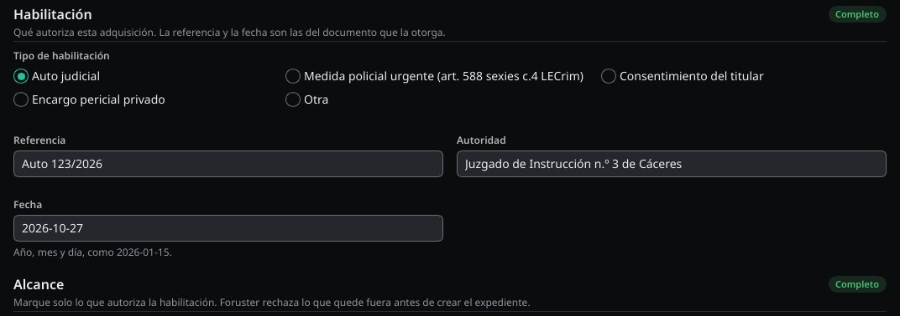
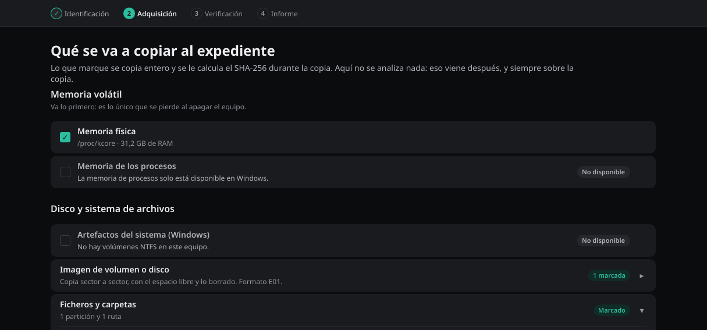

Orden de trabajo
- Identificación. Datos del caso, habilitación y alcance.
- Adquisición. Primero la memoria, si el equipo sigue encendido. Después, artefactos, ficheros o la imagen de un volumen o un disco.
- Verificación. Comprobar, firmar y sellar el expediente.
- Informe. El informe y el acta de volcado.
Identificación
Para adquirir hacen falta una licencia y estos datos: número de caso, organización, operador y su identificador, la habilitación y el alcance. Si falta alguno, Foruster no crea nada. Los datos quedan en el expediente y en el acta.

Los ejemplos están escritos para bash y guardan los datos del caso en la
variable CASO. En PowerShell se escribe
$CASO = @(...) y se pasa como @CASO.
CASO=(--case-number "EXP-1/2026" --organization "Laboratorio" \
--operator "Nombre Apellidos" --operator-id "ID-0001" --location "Cáceres" \
--legal-kind judicial-warrant --legal-reference "Auto 123/2026" \
--legal-authority "Juzgado de Instrucción nº 3" --legal-date 2026-01-15)Habilitación
--legal-kind | Habilitación |
|---|---|
judicial-warrant | Autorización judicial. |
urgent-police-measure | Medida policial urgente (LECrim art. 588 sexies c.4), pendiente de confirmación judicial. |
holder-consent | Consentimiento del titular. |
private-expert-assignment | Encargo pericial privado. |
other | Otra, descrita en --legal-reference. |
Con judicial-warrant y urgent-police-measure,
--legal-authority es obligatoria. La fecha no puede ser
posterior a hoy.
Foruster registra la habilitación que declaras; no comprueba que exista ni que cubra la actuación.
Alcance
Con --scope indicas cada categoría que autoriza la
habilitación. Lo que quede fuera se rechaza antes de crear el expediente.
El alcance se aplica a las fuentes y a las rutas, no al contenido: un
fichero de una categoría autorizada se copia entero.
--scope | Autoriza |
|---|---|
physical-memory | Memoria física. |
process-memory | Memoria de procesos. |
system-artifacts | Artefactos del sistema. |
volume-image | Imagen de un volumen o de una instantánea. |
disk-image | Imagen de un disco completo. |
selected-files | Ficheros seleccionados.
--scope-path los limita a una ruta. |
Destino
El expediente va en un soporte propio, nunca en el disco de origen. Foruster lo comprueba antes de crear nada. Compara discos, no particiones, y rechaza un destino cuyo disco no puede determinar, como una carpeta de red. Tampoco escribe en un directorio que no esté vacío.
Al adquirir ficheros o artefactos de navegador,
--allow-same-device permite escribir en el disco de origen.
Eso modifica el equipo intervenido, y el informe lo declara.

Memoria volátil
En Linux, la memoria física necesita root. Comprueba antes qué puede adquirirse y cuánto ocupará:
foruster-cli memory --dry-run --output /casos/EXP-1-2026-ram \
"${CASO[@]}" --scope physical-memory
Quita --dry-run para adquirir. Foruster no carga ningún
módulo en el equipo, porque eso lo modificaría. La imagen viaja con los
ficheros de contexto del kernel.
Una imagen de memoria nunca está completa. Se copia con el equipo en marcha, así que no es una instantánea. Los tramos ilegibles se rellenan a cero y quedan anotados.
Windows: memoria de procesos
En Windows, Foruster no adquiere memoria física. Con una sesión de administrador, vuelca la memoria de los procesos en minidumps que leen WinDbg y Volatility:
foruster-cli memory --processes --output 'E:\casos\EXP-1-2026-procesos' \
"${CASO[@]}" --scope process-memoryEl informe declara que no es memoria física. Volcar un proceso suspende sus hilos durante la copia. Un proceso protegido que se niega queda anotado como fallido.
Artefactos y ficheros
El catálogo localiza artefactos en sus rutas habituales: cookies e
historial de Chrome y de Firefox y, en Windows, los ficheros de
hibernación y paginación. Las bases de datos viajan con sus ficheros
-wal, -shm y -journal.
foruster-cli artifacts --existing-only
foruster-cli artifacts --existing-only --locator firefox-cookies-linux \
--acquire /casos/EXP-1-2026-artefactos "${CASO[@]}" --scope selected-filesPara rutas concretas:
foruster-cli acquire --path /ruta --output /casos/EXP-1-2026 \
"${CASO[@]}" --scope selected-filesArtefactos de Windows
Con una sesión de administrador, Foruster lee el NTFS del volumen en
crudo, así que copia también los ficheros bloqueados: colmenas del
registro, registros de eventos, Amcache, prefetch, SRUM, accesos
directos, listas de saltos, $MFT, el diario USN y
$LogFile.
foruster-cli windows-artifacts --list
foruster-cli windows-artifacts --volume C: --output 'E:\casos\EXP-1-2026-win' \
"${CASO[@]}" --scope system-artifacts
--target limita la recogida a los objetivos que indiques.
Foruster copia estos artefactos, no los interpreta. Cada uno lleva su hash y su procedencia. Un volumen en uso deja la sesión como parcial.